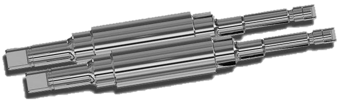
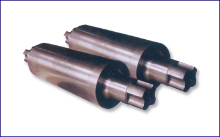
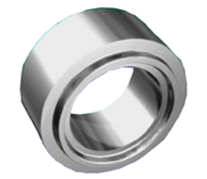
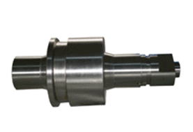
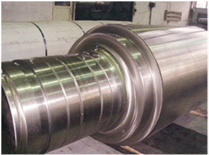
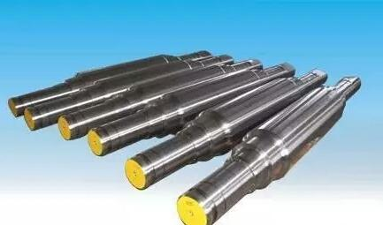

——
Product Center
——
-
Product Categories
-
- Metallurgical Rollers
- Large Industrial Grinder
- Special Smelting Equipment
- Roller Workshop Management System
- Grinding Machine Modification Service
- Common Spare Parts for Steel Mills
-

耐磨性高，耐热性好，硬度高，产生氧化膜的能力强。可以提升轧制轧辊的板型控制、抗事故性和表面质量，提高产量和良品率。
高速钢轧辊
-

合金无限冷硬铸铁轧辊是介于冷硬铸铁轧辊和灰口铸铁轧辊之间的一种材质轧辊。除具有较好的耐磨性外，还具有交好的抗剥落性、抗热裂性。
用途：棒、线材，型钢轧机中、精轧机架轧辊；无缝钢管轧机张减径辊环。合金无限冷硬铸铁轧辊
-

H型钢复合辊环是目前广泛应用于万能轧机的轧辊，它是由高耐磨性的半钢与强韧性优良的石墨钢离心复合而成。半钢的组织特点是10－20%的渗碳体断续地分布在贝氏体和细珠光体的混合组织上，使其具备较高的综合度要求，所以生产中要采用特殊的热处理设备与技术。
用途：万能轧机的水平辊和立辊H型钢复合辊环
-

半钢轧辊是含碳量1.2~2.2%，并添加有适量Cr，Mo，Ni等合金元素的轧辊。经过正火、淬火、回火处理后既具有铸铁轧辊耐磨性又具有铸钢轧辊的高强韧性整个工作层中的硬度落差很小。
用途：应用于带钢热连轧机粗轧、精轧前架用辊及立辊；热轧带钢支撑辊；型钢、轨梁轧机、棒材轧机的粗轧、中轧用辊；万能轧机水平辊、立辊、辊套等。半钢轧辊
-

使用中频感应炉熔炼优质钢水，采用先进的造型、浇注工艺铸造，再经过热处理工艺，辊身工作层基体组织为回火索氏体，获得高强度、良好耐热性、韧性和耐磨性。
用途：型钢粗、中轧机架水平及立辊，带钢热连轧机，大棒材粗轧机。铸钢轧辊
-

支撑着工作辊，通过工作辊接触轧件可以减小工作辊直径、增强工作辊刚度的轧辊。
支撑辊